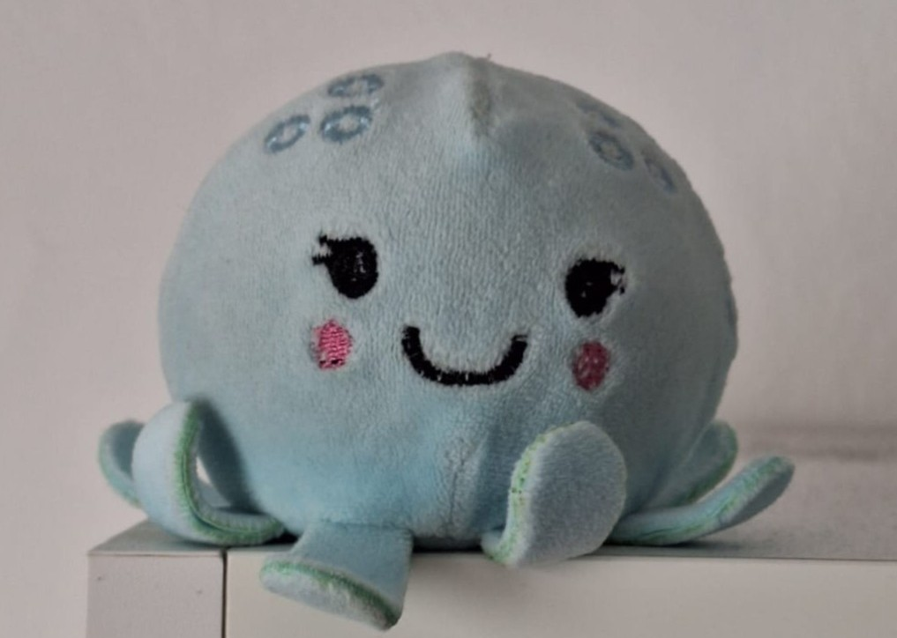

📖 SQUIDDY GLOSSARY
💖💖💖
A scholarly reference volume on the most commonly used vocabulary in the language of the polps.
Est. Valencia · All entries verified by at least one cephalopod.
§ Part I — Understanding Polpiness
Polpino, -a
/pol'pino/
noun
- The most adorable form of a cephalopod.
- A term of endearment referring to a squiddy being who enjoys both knuffels and coccole.
- A squishy blue puppet called 'Polpina' that was gifted to an Italian lady by a Dutch guy in Valencia.
POLP
/polp/
exclamation
noun
- A universal form for any emotional reaction.
- Synonym of polpino, -a, often preceded by article.
"POLP!"
Polpare
/pol'pare/
verb [I]
- Activity that concerns the expression of affection.
- To exist in a form of full love and enjoy the presence of a fellow squid.
- Caddeling.
"Basta studiare, è giunta l'ora di polpare!"
Polpfriend
/polp'frend/
noun
- A polp who is also a friend.
- More than a boyfriend or girlfriend: a polpfriend is a partner who gives eight times as many hugs and kisses.
- A life companion who shares your same passions (e.g. beers, Mirko Mariotti, AI Lodo song, pizza, zotty stuff, the goose game…)
"Having a Polpfriend is a squiddy experience, if you are willing to accept everlasting farts."
Polptrex
/'polptrεks/
noun
- A polp who is also a t-rex.
- Refers to Miss Polpa Toso.
- The actual meaning of this expression is unknown; only Mr. Misja Polpelius has the answer.
Polpiful
/'polpɪfʊl/
adjective
- Full of squiddy energy.
- A situation, person, activity, or entity that radiates the POLP factor.
"What do I think about the song Our House? Oh, it is absolutely polpiful!"
Polpiness
/'polpines/
noun
- State of being a polp.
- Joyful feeling shared in various occasions by two squiddies.
- Quality possessed by anything that is jolly and squiddy.
§ Part II — Polp Gastronomy
Polpcake
/'polpkeɪk/
food
- Gooey recipe from the Netherlands, cooked with a squiddy twist.
- Salty or sweet, it always makes the belly happy with its crunch and softness.
- The best dinner!
"Can we make Polpcakes tonight?" / "But we had them yesterday, and the day before, and the day before, and the day before… ñam, of course we can!"
Polpfertjes
/'polpfərtʃəs/
food
- Delicious and fluffy Nijntje-shaped mini polpcakes.
- The yummiest solution to fix a tokkie day.
- Little clouds of jolliness, often consumed with butter and powdered sugar.
"Ik houd van Polpfertjes! Kunnen we ze maken met onze Nijntje-Polpfertjespan van de Hema, de beste winkel ter world?"
Buon Polpetito
/bwɔn polpe'tito/
expression
- Said before enjoying a pizza, pita falafel, polpcake, noodles, or anything gooey.
- From the Italian buon appetito, adapted for squiddy communication.
- Must be used only for meals shared with a fellow polpfriend.
§ Part III — Polp Calendar
Polpiversary
/polpivərsəri/
holiday
- The celebration of the day that the polps decided to swim together.
- 13th of September.
- An extremely polpiful day which is all about acting squiddy and jolly, giving each other presents and having dolci coccole.
"It's only the 14th of February, but I can't wait to say Happy Polpiversary!"